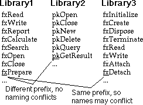
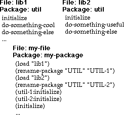

(/ 1 3) (+ (/ 7 11) (/ 13 31)) (defun factorial (n)
(/ 1 3) (+ (/ 7 11) (/ 13 31)) (defun factorial (n)(cond ((= n 0) 1)
(t (* n (factorial (- n 1))))))
(factorial 100)929638952175999932299156089414639761565182862536979208272
23758251185210916864000000000000000000000000
This sounds like a strange thing to say. Don't computers always do the right thing with numbers? Well, no... Not usually.
Numeric calculations can break in lots of different ways. One of the biggest trouble spots is in calculations with floating point numbers (your language may call them real numbers, but that's a lie). There are probably half as many books written on proper use of floating point calculations as there are on visual- or object-oriented-anything -- and that's a lot.
The problem with floating point numbers is that they're not mathematically accurate real numbers, but are often (mis)used as if they are. The main problem is that floating point numbers have a limited accuracy -- only so many digits to the right of the decimal point. Now, if all of the numbers in a calculation are of approximately the same magnitude, then the calculation won't lose accuracy. But if the numbers are of very different magnitude, then a floating point calculation sacrifices accuracy.
Suppose that a floating point number on your computer can accurately represent 7 decimal digits. Then you can add 1897482.0 to 2973225.0 and get a completely accurate answer. But if you try to add 1897482.0 to 0.2973225, the accurate answer has fourteen digits, while your computer will answer with 1897482.0.
The other problem with floating point numbers is more subtle. When you write a program, you write numbers in base 10. But the computer does all arithmetic in base 2. The conversion from base 10 to base 2 does funny things to certain "obviously exact" numbers. For example, the decimal number 0.1 is a repeating fraction when translated into binary. Because the computer can't store the infinite number of digits required by a repeating fraction, it can't store the number 0.1 accurately.
Integer (whole number) arithmetic poses another problem in most computer languages -- they tend to impose a limit on the maximum positive or negative value that an integer can hold. So, if you try to add the number one to the largest integer your language lets the computer handle, one of two things will happen:
So how does Lisp manage to do the right thing with numbers? After all, it seems like these problems are inherent in computer arithmetic. The answer is that Lisp doesn't do use just the built-in computer arithmetic operations -- it adds certain mathematically accurate numeric data types:
Of course, Lisp also has machine-based integers and floating point numbers. Machine integers are called fixnums in Lisp. So long as a whole number falls within the numeric range of a fixnum, Lisp will store it as a machine integer. But if it gets too big, Lisp automatically promotes it to a bignum.
When I said that Lisp almost always does the right thing with numbers, I meant that it almost always chooses the numeric representation that is mathematically correct:
1/3
(cond ((= n 0) 1)
(t (* n (factorial (- n 1))))))
929638952175999932299156089414639761565182862536979208272
23758251185210916864000000000000000000000000
You can write calculations to use floating point numbers, but Lisp won't automatically turn an exact numeric result into an inexact floating point number -- you have to ask for it. Floating point numbers are contagious -- once you introduce one into a calculation, the result of the entire calculation stays a floating point number:
Lisp prints floating point numbers with a decimal point, and integers without.
Basic Lisp I/O uses characters. The READ and
WRITE functions turn characters into Lisp objects and vice
versa. READ-CHAR and WRITE-CHAR read and write
single characters.
a
#\a
aA
Error: Not a character
We've introduced some new notation in the above examples. The symbol means that Lisp expects
input in response to an input function such as READ. This is
different from ,
which accepts input to be evaluated and printed. The  symbol indicates a
newline character, generated by the return or
enter key.
symbol indicates a
newline character, generated by the return or
enter key.
The  indicates output that is printed rather than returned as a value.
indicates output that is printed rather than returned as a value.
You should notice that newline terminates READ input. This
is because READ collects characters trying to form a complete
Lisp expression. We'll see more of this in Lesson 11. In the example, READ
collects a symbol, which is terminated by the newline. The symbol could
also have been terminated by a space, a parenthesis, or any other character
that can't be part of a symbol.
In contrast, READ-CHAR reads exactly one character from the
input. As soon as that character is consumed, READ-CHAR
completes executing and returns the character.
Some Lisp systems systems may require you to press the return key before any input is recognized. This is unusual, and can often be fixed by a configuration parameter -- consult your Lisp vendor.
WRITE and WRITE-CHAR both return the value
they're given. The way in which they print the value is different.
WRITE prints the value so that it could be presented to
READ to create the same value. WRITE-CHAR
prints just the readable character, without the extra Lisp syntax (the
#\) that would identify it to READ as a
character.
Lisp represents a single character using the notation
#\char, where char is a literal character or the
name of a character that does not have a printable glyph.
Character Hex Value Lisp Standard? -------------------------------------------------------- space 20 #\Space yes newline -- #\Newline yes backspace 08 #\Backspace semi tab 09 #\Tab semi linefeed 0A #\Linefeed semi formfeed 0C #\Page semi carriage return 0D #\Return semi rubout or DEL 7F #\Rubout semi
Only #\Space and #\Newline are required on all
Lisp systems. Systems that use the ASCII character set will probably
implement the rest of the character codes shown above.
The #\Newline character stands for whatever convention
represents the end of a printed line on the host system, e.g.:
System Newline Hex Value ----------------------------------- Macintosh CR 0D MS-DOS CR LF 0D 0A Unix LF 0A
The 94 printable standard characters are represented by #\char:
! " # $ % & ' ( ) * + , - . /
0 1 2 3 4 5 6 7 8 9 : ; < = > ?
@ A B C D E F G H I J K L M N O
P Q R S T U V W X Y Z [ \ ] ^ _
` a b c d e f g h i j k l m n o
p q r s t u v w x y z { | } ~
If you need to organize data in tables of two, three, or more dimensions, you can create an array:
(NIL NIL NIL NIL)
(NIL NIL NIL NIL))
((ELEMENT 1 0) NIL NIL NIL)
((ELEMENT 2 0) NIL NIL NIL))
You create an array using MAKE-ARRAY, which takes a list of
dimensions and returns an array. By default, an array can contain any
kind of data; optional arguments let you restrict the element data types
for the sake of efficiency.
An array's rank is the same as its number of dimensions. We
created a rank-2 array in the above example. Lisp prints an array using
the notation #rankA(...). The contents of the array
appear as nested lists, with the first dimension appearing as the outermost
grouping, and the last dimension appearing as the elements of the
innermost grouping.
Your Lisp system will probably not print an array with line breaks as I've shown here. I added these breaks to emphasize the structure of the array.
To retrieve an element of an array, use AREF.
AREF's first argument is the array; the remaining arguments
specify the index along each dimension. The number of indices must match
the rank of the array.
To set an element of an array, use AREF inside a
SETF form as shown in the example. SETF is
similar to SETQ, except where SETQ assigns a
value to a symbol, SETF assigns a value to a
place. In the examples, the AREF form specifies the
place as an element in the array.
Vectors are one-dimensional arrays. You can create a vector using
MAKE-ARRAY, and access its elements using AREF.
Lisp prints vectors using the slightly abbreviated form
#(...), rather than #1A(...).
You can use either a single-element list or a number to specify the
vector dimensions to MAKE-ARRAY -- the effect is the same.
You can create a vector from a list of values, using the VECTOR
form:
This is similar to the LIST form, except that the result is
a vector instead of a list. There are other similarities between lists
and vectors: both are sequences. Sequences are manipulated by the
functions we'll see in Chapter 13.
You can use AREF to access the elements of a vector, or you
can use the sequence-specific function, ELT:
You already know how to write a string using the "..."
syntax. Since a string is a vector, you can apply the array and vector
functions to access elements of a string. You can also create strings
using the MAKE-STRING function or change characters or symbols
to strings using the STRING function.
We saw in Lesson 5 that a symbol has a unique identity, but this bears repeating: A symbol is identical to any other symbol spelled the same way (including its package designation, which we'll learn more about at the end of this lesson). This means that you can have Lisp read a program or data, and every occurrence of a symbol with the same spelling is the same symbol. Since Lisp supplies the mechanism to do this, it's one less thing you have to worry about when you write a program that manipulates symbolic information.
We also learned in Lesson 5 that a symbol can have values as a variable and a function, and for documentation, print name, and properties. A symbol's property list is like a miniature database which associates a number of key/value pairs with the symbol. For example, if your program represented and manipulated objects, you could store information about an object on its property list:
COLOR RED)
Note that OBJECT-1 doesn't have a value -- all of the
useful information is in two places: the identity of the symbol,
and the symbol's properties.
This use of properties predates modern object programming by a few decades. It provides two of the three essential mechanisms of an object: identity and encapsulation (remember that property values could just as well be a function). The third mechanism, inheritance, was sometimes simulated by links to other "objects."
Properties are less often used in modern Lisp programs. Hash tables (see below), structures (described in the next section), and CLOS objects (see Chapter 7 and Chapter 14) provide all of the capabilities of property lists in ways that are easier to use and more efficient. Modern Lisp development systems often use properties to annotate a program by keeping track of certain information such as the file and file position of the defining form for a symbol, and the definition of a function's argument list (for use by informational tools in the programming environment).
A Lisp structure gives you a way to create an object which stores related data in named slots.
:size 'small
:color 'green
:weight 10
:shape 'square))
:POSITION NIL :WEIGHT 10)
In the example, we defined a structure type named STRUCT-1
with slots named COLOR, SHAPE, SIZE,
POSITION, and WEIGHT. Then we created an
instance of a STRUCT-1 type, and assigned the instance to the
variable OBJECT-2. The rest of the example shows how to
access slots of a struct instance using accessor functions named for the
structure type and the slot name. Lisp generates the
make-structname and structname-slotname functions when
you define a structure using DEFSTRUCT.
We'll look at DEFSTRUCT's optional features in Chapter 6.
A symbol can be associated with any type of value at runtime. For cases where it matters, Lisp lets you query the type of a value.
TYPE-OF returns a symbol or a list indicating the type of
its argument. This information can then be used to guide a program's
behavior based upon the type of its arguments. The TYPECASE
function combines the type inquiry with a COND-like dispatch.
With the introduction of generic functions in CLOS (see Chapter 14), TYPE-OF is not as
important as it once was.
A hash table associates a value with a unique key. Unlike a property list, a hash table is well suited to a large number of key/value pairs, but suffers from excessive overhead for smaller sets of associations.
You create a hash table using MAKE-HASH-TABLE, and access
values using GETHASH. GETHASH returns two
values. The first is the value associated with the key. The second
is T if the key was found, and NIL
otherwise. Notice the difference between the first and last
GETHASH form in the examples above.
By default, a hash table is created so that its keys are compared using EQ -- this works for symbols, but not numbers or lists. We'll learn more about equality predicates in Chapter 17. For now, just remember that if you want to use numbers for keys, you must create a hash table using the form:
(make-hash-table :test #'eql)
If you want to use lists for keys, create your hash table with:
(make-hash-table :test #'equal)
If you want to remove a key, use the form (REMHASH key
hash-table). And if you want to change the value for a
key, use GETHASH with SETF, just as if you were
adding a new key/value pair.
One of the things that's hard about writing programs is naming parts of your program. On one hand, you want to use names that are easy to remember and evocative of the role or purpose of the named object. On the other hand, you don't want to use a name that someone else has already used (or is likely to use) in a different program that you may someday have to make work with your program.
One way to avoid naming conflicts is to give every name in your program a unique prefix that no one else is likely to use. You see this done all the time with libraries -- the prefix is typically one to three characters. Unfortunately, this still leaves a lot of room for two software developers to choose the same prefix; especially since some prefixes are more evocative than others. If you have control over all the software that will be developed for your product, you can choose all of the prefixes and avoid problems. If you're going to buy third-party software that uses a prefix naming scheme, you'll have to work around the names chosen by your vendors and hope that two different vendors don't stumble upon the same prefix.
Another way to avoid naming conflicts is to use qualified names. To do this, the language must provide support for separate namespaces defined and controlled by the programmer. To understand how this works, imagine that all the names you create for your program get written on a sheet of paper with your name written at the top as a title -- this is the qualifier for all of your names. To see whether a name is safe to use, you only have to check the list of names you've written on this page. When someone else's software needs the services of your program, they refer to your names by using both your qualifier and name. Because the other person's software has a different qualifier, and their qualifier is implicit (that is, it doesn't need to be written) for their own names, there's no chance of a name conflict.
You might think that a qualifier is no more than a complicated way to add a prefix to a name. However, there's a subtle but important difference. A prefix is part of the name; it cannot be changed once written. A qualifier is separate from the names it qualifies, and is "written down" in exactly one place. Furthermore, you can point to the "sheet of paper" upon which names are written and refer to it as "those names." If you happen to choose the same qualifier as another programmer, you can still refer to "those names" by a qualifier of your own choosing -- In other words, you can change the qualifier after the software has been delivered for your use.
In the above example, two libraries are delivered in files
LIB1 and LIB2. Both library designers used the
name UTIL for the name of their namespace, known in Lisp as a
package name. Each library lists the names exposed to a client. The
programmer who uses the two libraries writes code in the package name
MY-PACKAGE. After loading each library, the programmer
renames its package so the names are distinct. Then, names in the library
are referenced using their renamed qualifiers, as we see in the
calls to UTIL-1:INITIALIZE and UTIL-2:INITIALIZE.
Notice how the INITIALIZE name is still available to the
programmer in its unqualified form -- this is equivalent to
MY-PACKAGE:INITIALIZE.
Lisp provides this functionality through a set of functions and macros
collective known as the package facility. The DEFPACKAGE
macro conveniently provides most package operations, while the
IN-PACKAGE macro sets the current package:
;;;; ---- File 1 ---- (defpackage util1 (:export init func1 func2) (:use common-lisp)) (in-package util1) (defun init () 'util1-init) (defun func1 () 'util1-func1) (defun func2 () 'util1-func2) ;;;; ---- File 2 ---- (defpackage util2 (:export init func1 func2) (:use common-lisp)) (in-package util2) (defun init () 'util2-init) (defun func1 () 'util2-func1) (defun func2 () 'util2-func2) ;;;; ---- File 3 ---- (defpackage client (:use common-lisp) (:import-from util1 func1) (:import-from util2 func2)) (in-package client) (defun init () 'client-init) (util1:init) (util2:init) (init) (func1) (func2)
The example lists the contents of three files. File 1 and File 2 both
define three functions using identical names. File 1 puts names in the
UTIL1 package, while File 2 uses the UTIL2
package. The DEFPACKAGE form names the package. The
:USE option specifies that names from another package may be
used without qualification, while the :EXPORT option
specifies the names that are exposed to clients of the package.
The DEFPACKAGE form only creates a package. The
USE-PACKAGE form makes a package current -- all
unqualified names are in whatever package is current. The
COMMON-LISP:*PACKAGE* variable always contains the current
package.
File 3 creates the CLIENT package. The
:IMPORT-FROM options bring in specific names from the
UTIL1 and UTIL2 packages -- these names may be
used without qualification in the CLIENT package. Names that
are exported from UTIL1 or UTIL2 but not imported
by CLIENT may still be referenced within CLIENT
by using an explicit qualifier of the form
package:name.
This section covered only very basic package operations. We'll cover additional details in Chapter 31, when we look again at packages within the context of constructing large software systems.